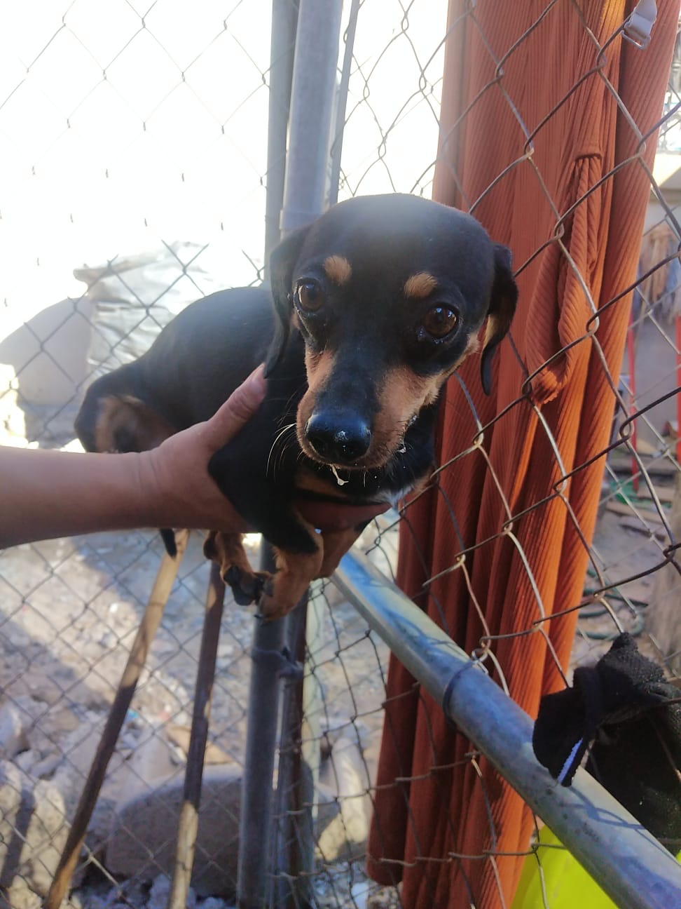
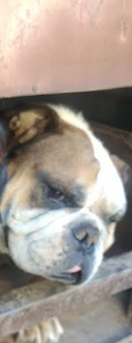
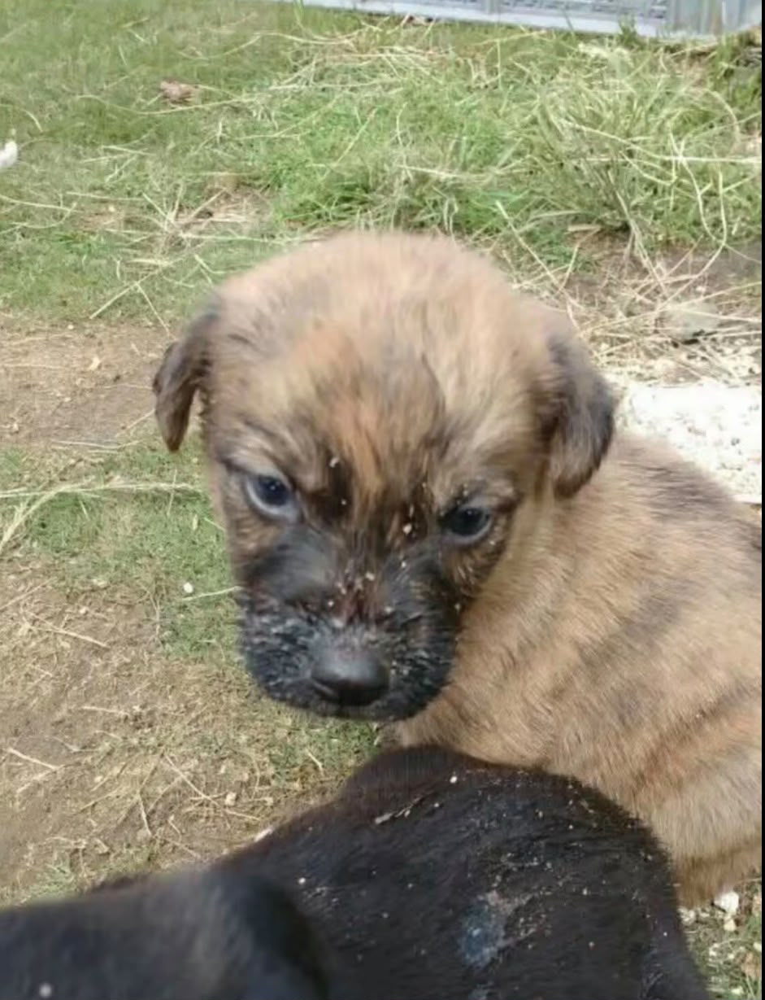

Historias de rescate y nuevas oportunidades
Cada animalito tiene una historia diferente. Aquí compartimos las experiencias de algunos que fueron rescatados y ahora disfrutan de una vida con cariño, atención y cuidados.

Edad: 1 año y medio
Aunque al principio le cuesta confiar en otras personas, es cariñosa con los niños y le encanta jugar. Fue rescatada el 1 de enero de 2026, después de asustarse por los fuegos artificiales de Año Nuevo.

Edad: 3 años
Es un perro tranquilo y cariñoso. Encontró una nueva familia cuando sus anteriores cuidadores ya no podían hacerse cargo de más animales.

Edad: 2 meses
Es alegre, juguetón y lleno de energía. Nació en las instalaciones de una secundaria, donde su mamá había llegado antes de tener a sus cachorritos.
Estas historias nos recuerdan la importancia de tratar a los animales con respeto. El rescate, la atención veterinaria y el cuidado responsable pueden hacer una gran diferencia en sus vidas.
¡Sigamos trabajando juntos por el bienestar de los animales de nuestra comunidad!